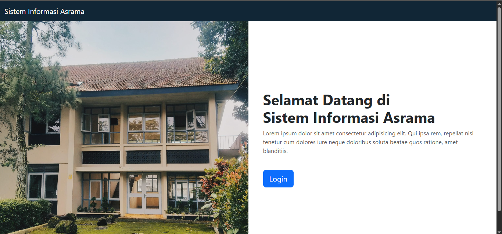
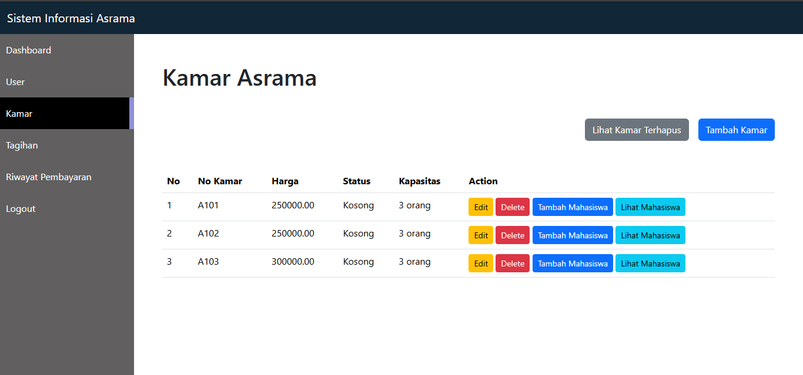
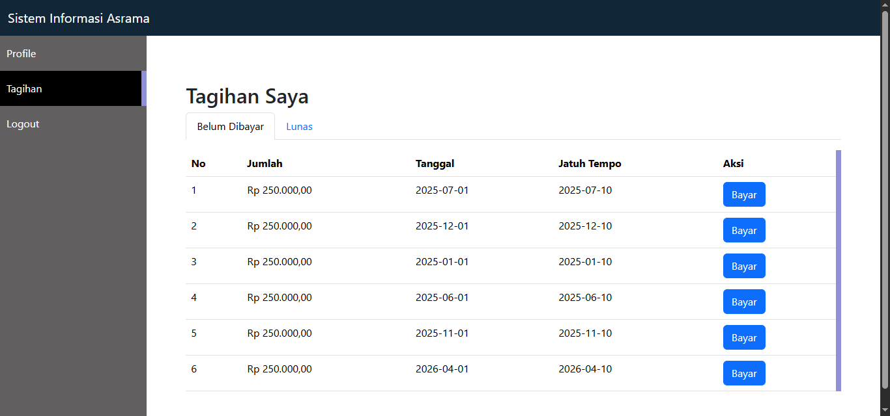
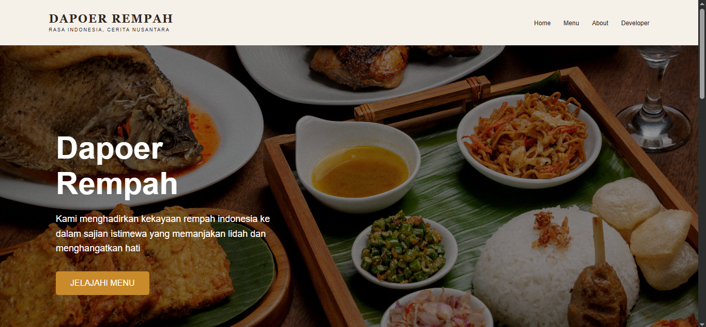
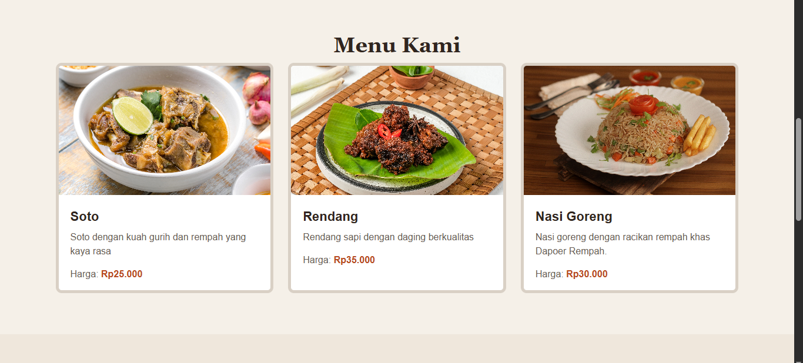
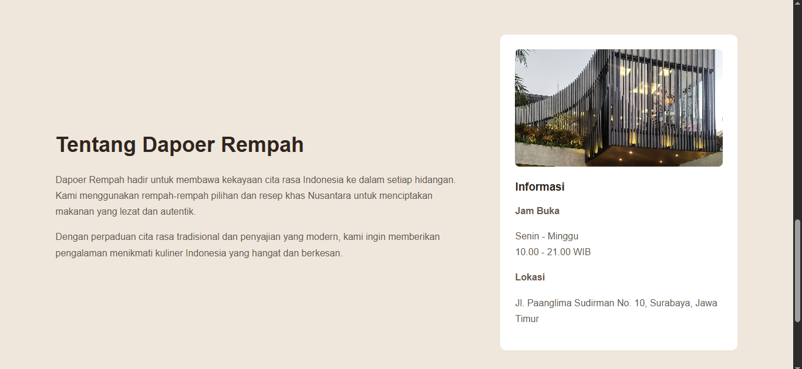
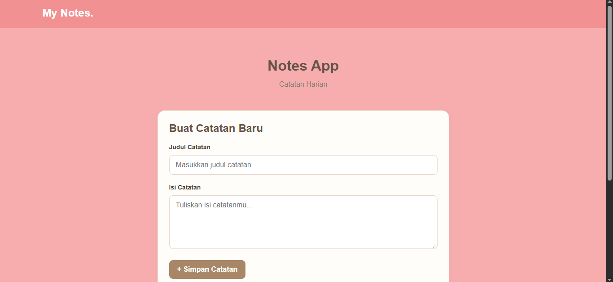
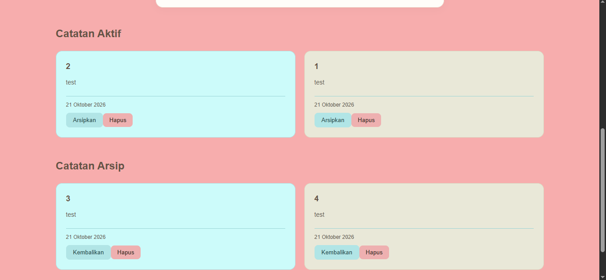

Pendidikan
S1 Teknik Informatika
Universitas Kristen Satya Wacana
IPK: 3.57 / 4.00
Lulusan Teknik Informatika yang tertarik pada pengembangan web, khususnya membangun aplikasi web menggunakan berbagai teknologi
01 / TENTANG
Saya Agnes, lulusan S1 Teknik Informatika Universitas Kristen Satya Wacana dengan pengalaman magang sebagai Software Developer di Hashmicro. Saya tertarik pada pengembangan web dan backend, serta terus berupaya mengembangkan kemampuan pemrograman dan memperdalam pengetahuan di bidang teknologi
Universitas Kristen Satya Wacana
IPK: 3.57 / 4.00
02 / Pengalaman
PENGALAMAN MAGANG
Agustus - Desember · 2022
• Mengikuti pelatihan mengenai Struktur Pengembangan Perangkat Lunak, Pemrograman Python, dan
Enterprise Resource Planning (ERP)
• Membantu memperbaiki bug ringan pada perangkat lunak
• Berpartisipasi dalam proses debugging dan penyelesaian masalah pada perangkat lunak
• Berkolaborasi dengan mentor dan anggota tim dalam diskusi proyek serta sesi pembelajaran
03 / PROYEK
Beberapa proyek yang saya kerjakan sebagai bagian dari proses belajar dan pengembangan kemampuan di bidang web.



Aplikasi web untuk mengelola data mahasiswa, alokasi kamar, tagihan, dan riwayat pembayaran asrama.



Website restoran yang menampilkan informasi restoran dan pilihan menu dengan tampilan yang responsif.


Aplikasi web untuk membuat dan menampilkan catatan dengan memanfaatkan REST API.
04 / Kontak